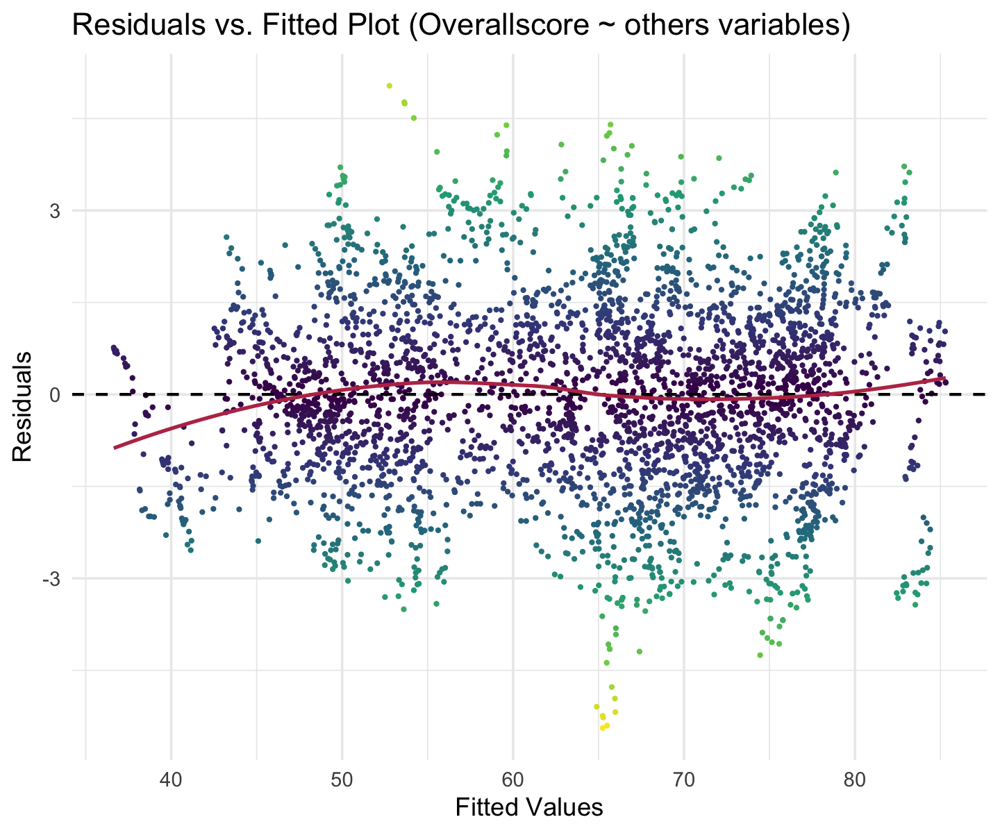
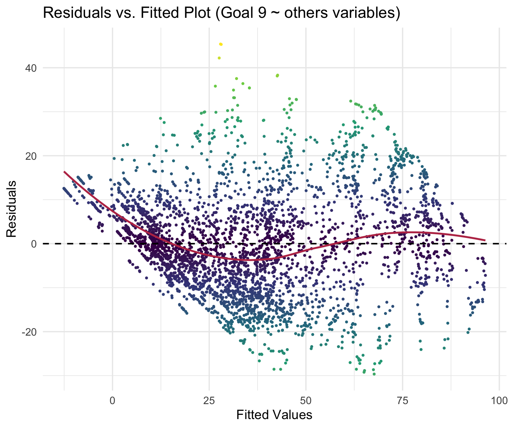
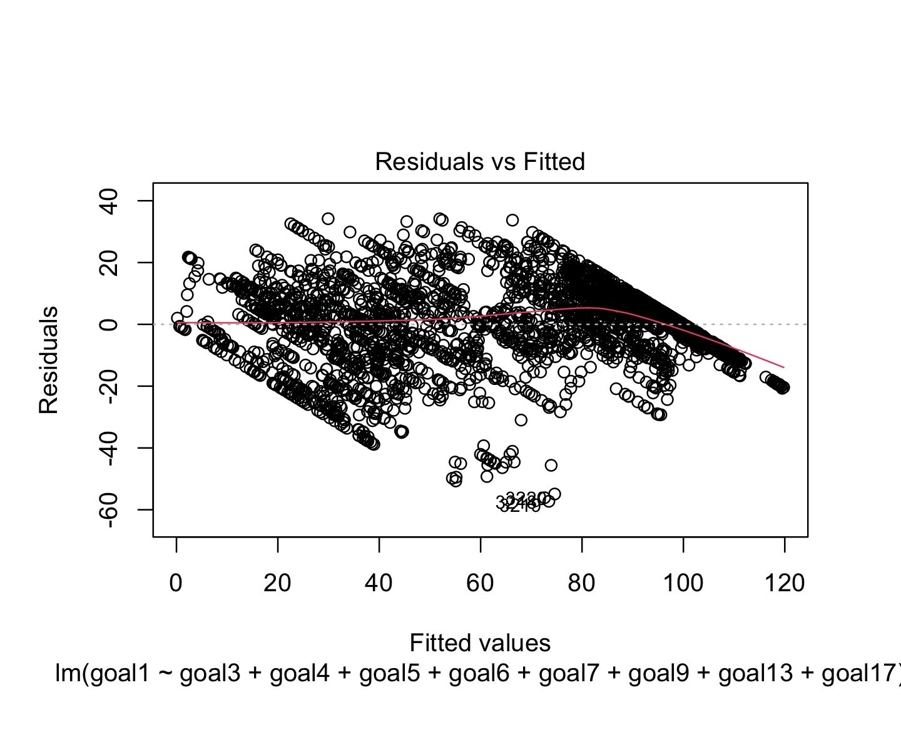
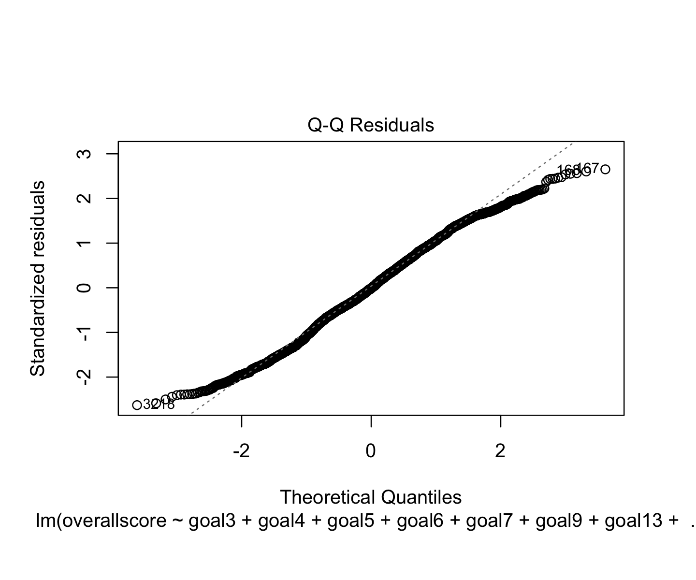
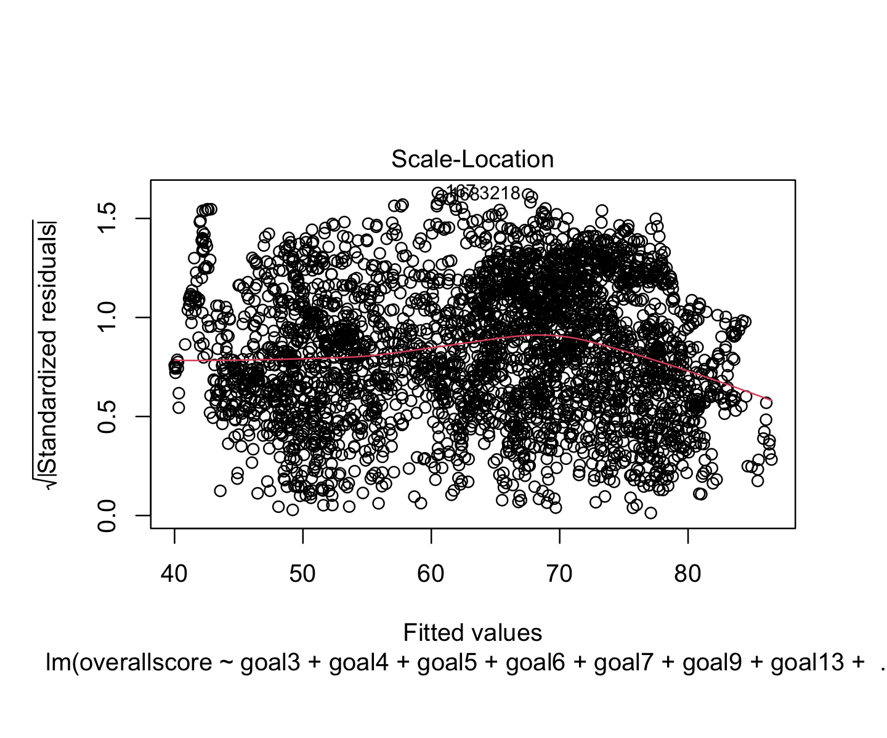
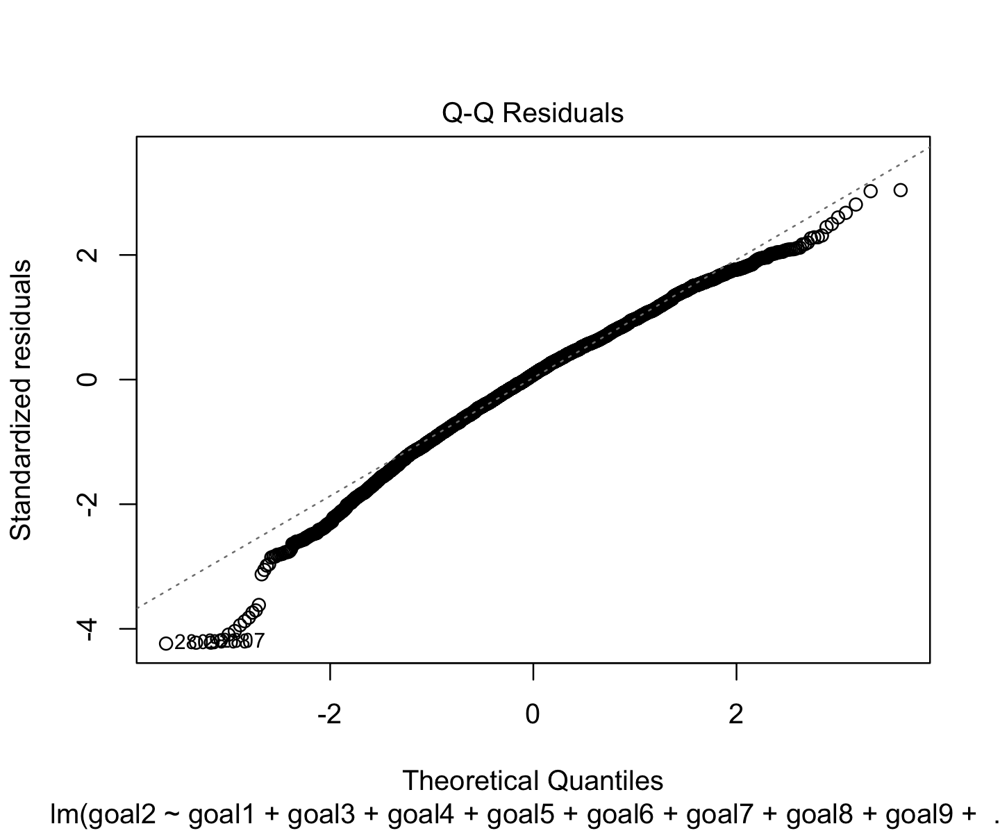
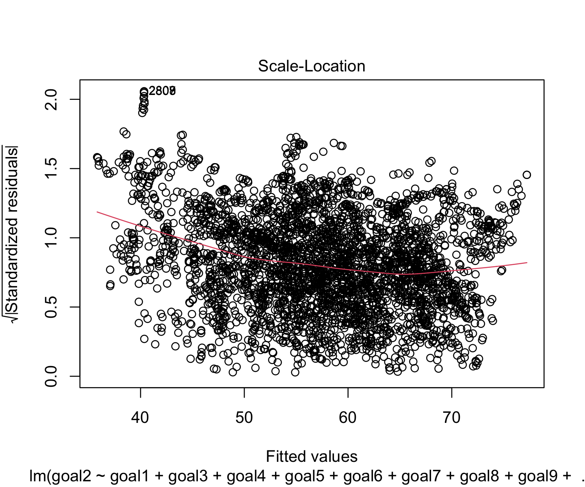
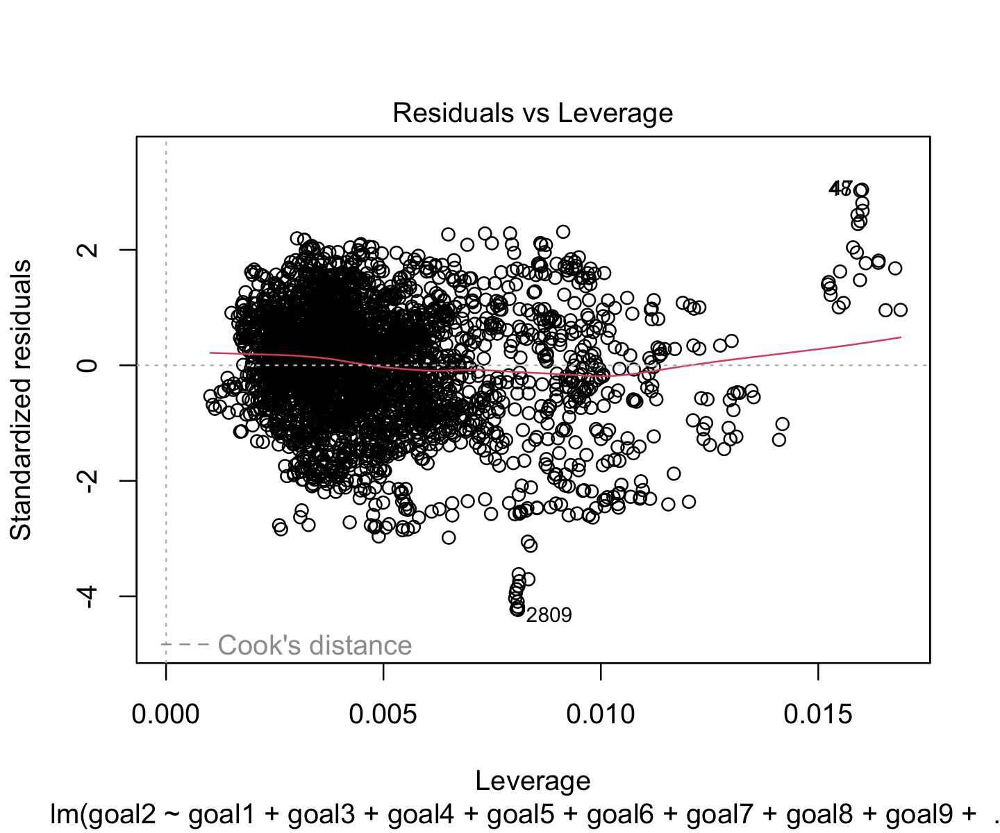
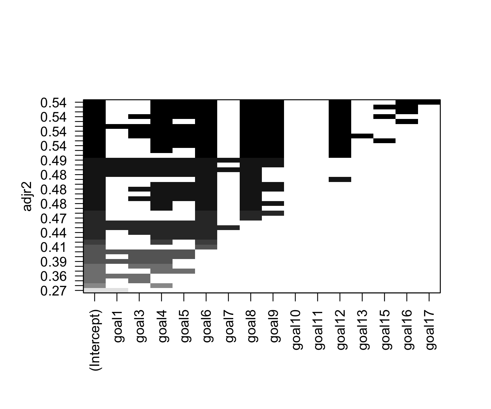

#### Preparation of the data ####
# Keeping only the columns of interest for the correlation calcluation
data_4_goals <- data_4 %>%
dplyr::select(overallscore, goal1, goal2, goal3, goal4, goal5,
goal6,goal7, goal8, goal9, goal10, goal11, goal12,
goal13, goal15, goal16, goal17)Focus on the relationships among the SDGs
How are the different SDGs linked? (We want to see if some SDGs are linked in the fact that a high score on one implies a high score on the other, and thus if we can make groups of SDGs that are comparable in that way).
EDA: General visualization of the SDGs
We want now to explore and analyse how the SDGs scores are linked together. We first, interest ourself to the correlation between the goals scores. To do that we chose to use a correlation heatmap. We set an arbitrary threashold to better concentrate our attention to the most corrolated goals. We fixed our threashold at 0.5 (indicating a strong positive relationship) and less than -0.5 (signifying a strong negative relationship).
Given that, as seen previously, our variables do not follow a normal distribution, employing the Pearson correlation method is not suitable in our analysis since it requires observations to be normaly distributed. We attempted to normalize the data through logarithmic or square root transformations, but these adjustments were insufficiently effective. Consequently, we will resort to computing the Spearman correlation. While not ideal, this method does not necessitate the normal distribution of our data. In our analysis, particularly for the heatmap visualization, we will focus on correlations that exceed the threshold of 0.5 or fall below -0.5. This selective approach will enhance the readability and interpretability of the heatmap.
To do that, we select only the colums of interest and compute the correlation matrix using Spearman correlation. We then melt the matrix to be able to plot it. We then plot the heatmap using ggplot2.
#### Spearman Correlation ####
# Calculate Spearman correlation
spearman_corr_4 <-cor(data_4_goals, method = "spearman", use = "everything")
# Apply threshold and replace values below it with NA
spearman_corr_4[abs(spearman_corr_4) < threashold_heatmap] <- NA#### Spearman Correlation Heatmap ####
# Melting the data
melted_corr_4 <- melt(spearman_corr_4, na.rm = TRUE)
# Creation of the heatmap
ggplot(data = melted_corr_4, aes(x = Var1, y = Var2, fill = value)) +
geom_tile() +
geom_text(aes(label = sprintf("%.2f", value)), vjust = 0.5, size=2.5) + # Adding text
scale_fill_gradient2(low = "blue", high = "red", mid = "white",
midpoint = 0, limit = c(-1,1), space = "Lab",
name="Spearman\nCorrelation",
na.value = "grey") +
theme_minimal() +
theme(axis.text.x = element_text(angle = 45, hjust = 1)) +
labs(title = "Heatmap of Spearman Correlations for Goals",
x = "", y = "")
The correaltion can be read on the graph. The darker the color, the stronger the correlation. If there is not colors, it means that the gaols correlation does not exceed our threashold of ±0.5.
It is evident that the Sustainable Development Goals (SDGs) are intricately interconnected. However, certain goals appear to be less interrelated compared to others. Specifically, SDG 1 (No Poverty) and SDG 10 (Reduced Inequalities) demonstrate a weaker correlation with the rest of the goals. Similarly, Goal 15 (Life on Land) also exhibits a lesser degree of interconnection with the other SDGs. It is also interesting to note that some goals are negatively correlated with others. For instance, based on the Spearman correlation, goal 12 (Responsable Consumption and Production) and goal 13 (Climate Action) are negatively correlated with the others goals. This suggest that when the higher a goal other than goal 12 or 13 is, the lower the goals 12 and 13 are. Given their similar nature, it is not surprising that they are highly correlated with each other.
Analysis: Factor analysis and Stepwise regression applied to the SDGs
At this point, we saw that the goals were mostly correlated. We now want to see if we can group them in a smaller number of factors. To do that, we will use a principal component analysis (PCA). We will first look at the scree plot to see how many factors we should keep. We will then look at the biplot to see how the goals are grouped together.
#### Scree Plot ####
# Selecting only the goals columns
goals_data <- data_4 %>%
dplyr::select(goal1, goal2, goal3, goal4, goal5,
goal6,goal7, goal8, goal9, goal10, goal11, goal12,
goal13, goal15, goal16, goal17)
goals_data_scaled <- scale(goals_data) # Scaling the data
pca_result <- prcomp(goals_data_scaled) # Running PCA
# Plotting Scree plot to visualize the importance of each principal component
fviz_eig(pca_result,
addlabels = TRUE,
col.var="dodgerblue3") +
theme_minimal()
eigenvalues <- pca_result$sdev^2 # getting the eigenvalues
We see clearly that the first component is the most important one. Guided by the Kaiser criterion, which advises retaining only those components with eigenvalues exceeding 1, the initial three components emerge as candidates. However, considering the third component’s eigenvalue of 1.016, we opted for simplification by focusing exclusively on the first two components. This decision also enhances clarity in the biplot representation, as it reduces the dimensions to just two, making interpretation more straightforward.
#### Biplot ####
# Plotting Biplot to visualize the two main dimensions
fviz_pca_biplot(pca_result,
label="var",
col.var="dodgerblue3",
geom="point",
pointsize = 0.1,
labelsize = 4) +
theme_minimal()
The biplot offers insightful visualization, clearly illustrating the relationship between the various goals and the first two components. Notably, Dimension 2 exhibits a strong correlation with Goals 10 (Reduced inequalities) and 15 (Life on Land), whereas the remaining goals show a moderate to high correlation with Dimension 1. Furthermore, an interesting pattern emerges, revealing three distinct groups of variables, each playing a unique role. One group comprises Goals 12 (Responsible Consumption and Production) and 13 (Climate Action), another encompasses Goals 10 (Reduced inequalities) and 15 (Life on Land), and the third group includes all other variables. This categorization aids in understanding the distinct influences and interactions among the goals.
Grouping Goal 12 (Responsible Consumption and Production) and Goal 13 (Climate Action) together is logical, as both pertain to environmental issues. It is, however, interesting to note the pairing of Goal 10 (Reduced Inequalities) with Goal 15 (Life on Land). This could be explained by the fact that Goal 10 (Reduced inequalities) is related to the reduction of inequalities within and among countries, while Goal 15 (Life on Land) is related to the protection, restoration and promotion of sustainable use of terrestrial ecosystems, sustainable manage forests, combat desertification, and halt and reverse land degradation and halt biodiversity loss. Therefore, it is possible that the respondents who are more concerned about the reduction of inequalities are also more concerned about the protection of the environment. But this is a stretched.
///////////////////////////////////////////////////////////////////////// ////////////////////////////// WIP ///////////////////////////////// /////////////////////////////////////////////////////////////////////////
goals_data <- data_4 %>%
dplyr::select(overallscore, goal1, goal2, goal3, goal4, goal5,
goal6,goal7, goal8, goal9, goal10, goal11, goal12,
goal13, goal15, goal16, goal17)lm_o_n <- lm(overallscore ~ 1, data = goals_data)
lm_o_f <- lm(overallscore ~ goal1 + goal2 + goal3 + goal4 + goal5
+ goal6 + goal7 + goal8 + goal9 + goal10 + goal11
+ goal12 + goal13 + goal15 + goal16 + goal17,
data = goals_data)
step_o <- step(lm_o_n, scope = list(lower = lm_o_n, upper = lm_o_f))
#> Start: AIC=16177
#> overallscore ~ 1
#>
#> Df Sum of Sq RSS AIC
#> + goal3 1 374063 51968 9162
#> + goal7 1 337079 88952 10955
#> + goal1 1 334843 91187 11038
#> + goal6 1 332271 93760 11130
#> + goal4 1 324051 101980 11411
#> + goal11 1 318638 107393 11583
#> + goal9 1 301672 124358 12072
#> + goal16 1 265279 160752 12928
#> + goal12 1 243137 182894 13359
#> + goal8 1 233128 192903 13536
#> + goal5 1 212825 213206 13870
#> + goal2 1 203256 222775 14017
#> + goal13 1 166142 259889 14531
#> + goal17 1 151745 274286 14710
#> + goal10 1 114345 311686 15137
#> + goal15 1 25418 400613 15974
#> <none> 426031 16177
#>
#> Step: AIC=9162
#> overallscore ~ goal3
#>
#> Df Sum of Sq RSS AIC
#> + goal6 1 13969 37998 8120
#> + goal7 1 10675 41293 8398
#> + goal2 1 10558 41410 8407
#> + goal5 1 10064 41904 8447
#> + goal4 1 9984 41984 8453
#> + goal15 1 9816 42152 8466
#> + goal9 1 7828 44139 8620
#> + goal11 1 7762 44206 8625
#> + goal8 1 7457 44511 8648
#> + goal17 1 6369 45599 8728
#> + goal10 1 5728 46240 8775
#> + goal16 1 5709 46259 8776
#> + goal1 1 5509 46459 8791
#> + goal12 1 1100 50868 9093
#> + goal13 1 174 51794 9153
#> <none> 51968 9162
#> - goal3 1 374063 426031 16177
#>
#> Step: AIC=8120
#> overallscore ~ goal3 + goal6
#>
#> Df Sum of Sq RSS AIC
#> + goal10 1 6566 31432 7490
#> + goal7 1 6491 31508 7498
#> + goal4 1 6383 31615 7509
#> + goal15 1 4880 33118 7664
#> + goal2 1 4855 33144 7666
#> + goal5 1 4535 33464 7698
#> + goal17 1 3904 34094 7761
#> + goal11 1 3780 34219 7773
#> + goal16 1 3585 34413 7792
#> + goal9 1 3228 34770 7826
#> + goal1 1 3067 34932 7842
#> + goal8 1 2527 35472 7893
#> + goal13 1 67 37932 8116
#> + goal12 1 45 37954 8118
#> <none> 37998 8120
#> - goal6 1 13969 51968 9162
#> - goal3 1 55762 93760 11130
#>
#> Step: AIC=7490
#> overallscore ~ goal3 + goal6 + goal10
#>
#> Df Sum of Sq RSS AIC
#> + goal4 1 8227 23205 6480
#> + goal7 1 7315 24117 6608
#> + goal5 1 6869 24563 6669
#> + goal11 1 5784 25648 6813
#> + goal17 1 5446 25986 6857
#> + goal2 1 4737 26695 6947
#> + goal15 1 3001 28431 7157
#> + goal1 1 2154 29278 7255
#> + goal16 1 1447 29985 7334
#> + goal9 1 1419 30013 7338
#> + goal8 1 1361 30071 7344
#> + goal13 1 1061 30371 7377
#> + goal12 1 324 31108 7457
#> <none> 31432 7490
#> - goal10 1 6566 37998 8120
#> - goal6 1 14808 46240 8775
#> - goal3 1 40764 72196 10261
#>
#> Step: AIC=6480
#> overallscore ~ goal3 + goal6 + goal10 + goal4
#>
#> Df Sum of Sq RSS AIC
#> + goal17 1 5305 17900 5616
#> + goal7 1 3973 19232 5855
#> + goal15 1 3739 19466 5896
#> + goal5 1 3538 19667 5930
#> + goal2 1 3326 19879 5966
#> + goal11 1 3242 19962 5980
#> + goal16 1 2361 20844 6124
#> + goal9 1 1400 21805 6274
#> + goal13 1 1211 21994 6303
#> + goal8 1 1028 22177 6330
#> + goal1 1 702 22503 6379
#> + goal12 1 406 22799 6423
#> <none> 23205 6480
#> - goal4 1 8227 31432 7490
#> - goal10 1 8410 31615 7509
#> - goal6 1 10770 33975 7749
#> - goal3 1 12033 35238 7871
#>
#> Step: AIC=5616
#> overallscore ~ goal3 + goal6 + goal10 + goal4 + goal17
#>
#> Df Sum of Sq RSS AIC
#> + goal2 1 3704 14196 4845
#> + goal7 1 2992 14908 5008
#> + goal15 1 2891 15009 5030
#> + goal11 1 2068 15831 5208
#> + goal5 1 2060 15840 5210
#> + goal8 1 1723 16177 5280
#> + goal13 1 1287 16613 5369
#> + goal16 1 1031 16868 5420
#> + goal9 1 920 16980 5442
#> + goal12 1 414 17485 5540
#> + goal1 1 335 17564 5555
#> <none> 17900 5616
#> - goal17 1 5305 23205 6480
#> - goal4 1 8087 25986 6857
#> - goal6 1 8501 26401 6910
#> - goal3 1 8842 26741 6953
#> - goal10 1 10072 27971 7103
#>
#> Step: AIC=4845
#> overallscore ~ goal3 + goal6 + goal10 + goal4 + goal17 + goal2
#>
#> Df Sum of Sq RSS AIC
#> + goal7 1 3109 11087 4022
#> + goal15 1 2597 11599 4173
#> + goal11 1 2072 12124 4321
#> + goal5 1 1323 12872 4520
#> + goal16 1 918 13278 4624
#> + goal13 1 893 13303 4630
#> + goal1 1 716 13479 4674
#> + goal8 1 655 13540 4689
#> + goal9 1 401 13794 4751
#> + goal12 1 108 14088 4821
#> <none> 14196 4845
#> - goal2 1 3704 17900 5616
#> - goal6 1 4986 19182 5847
#> - goal17 1 5683 19879 5966
#> - goal4 1 6616 20811 6118
#> - goal3 1 8183 22379 6361
#> - goal10 1 9814 24009 6595
#>
#> Step: AIC=4022
#> overallscore ~ goal3 + goal6 + goal10 + goal4 + goal17 + goal2 +
#> goal7
#>
#> Df Sum of Sq RSS AIC
#> + goal15 1 2888 8199 3018
#> + goal5 1 1308 9779 3606
#> + goal11 1 1083 10004 3681
#> + goal8 1 1033 10054 3698
#> + goal16 1 996 10091 3710
#> + goal9 1 743 10344 3793
#> + goal13 1 461 10626 3883
#> + goal1 1 231 10856 3954
#> + goal12 1 35 11052 4014
#> <none> 11087 4022
#> - goal7 1 3109 14196 4845
#> - goal3 1 3550 14637 4947
#> - goal2 1 3821 14908 5008
#> - goal6 1 3830 14917 5010
#> - goal4 1 3949 15036 5036
#> - goal17 1 4653 15740 5189
#> - goal10 1 9921 21008 6152
#>
#> Step: AIC=3018
#> overallscore ~ goal3 + goal6 + goal10 + goal4 + goal17 + goal2 +
#> goal7 + goal15
#>
#> Df Sum of Sq RSS AIC
#> + goal11 1 1230 6969 2478
#> + goal8 1 642 7557 2748
#> + goal5 1 636 7563 2751
#> + goal16 1 625 7574 2755
#> + goal13 1 616 7583 2760
#> + goal9 1 600 7599 2766
#> + goal1 1 357 7842 2871
#> + goal12 1 244 7956 2919
#> <none> 8199 3018
#> - goal6 1 2125 10325 3785
#> - goal15 1 2888 11087 4022
#> - goal7 1 3400 11599 4173
#> - goal2 1 3512 11711 4205
#> - goal17 1 3811 12011 4289
#> - goal4 1 4347 12546 4435
#> - goal3 1 4380 12579 4443
#> - goal10 1 7516 15715 5186
#>
#> Step: AIC=2478
#> overallscore ~ goal3 + goal6 + goal10 + goal4 + goal17 + goal2 +
#> goal7 + goal15 + goal11
#>
#> Df Sum of Sq RSS AIC
#> + goal13 1 881 6088 2029
#> + goal9 1 529 6440 2217
#> + goal8 1 497 6472 2233
#> + goal12 1 490 6480 2237
#> + goal1 1 483 6487 2241
#> + goal5 1 403 6566 2281
#> + goal16 1 229 6740 2368
#> <none> 6969 2478
#> - goal11 1 1230 8199 3018
#> - goal6 1 1641 8611 3181
#> - goal7 1 2312 9282 3432
#> - goal3 1 2907 9876 3639
#> - goal15 1 3034 10004 3681
#> - goal17 1 3139 10108 3716
#> - goal2 1 3489 10458 3830
#> - goal4 1 3552 10522 3850
#> - goal10 1 8115 15085 5051
#>
#> Step: AIC=2029
#> overallscore ~ goal3 + goal6 + goal10 + goal4 + goal17 + goal2 +
#> goal7 + goal15 + goal11 + goal13
#>
#> Df Sum of Sq RSS AIC
#> + goal9 1 1579 4509 1030
#> + goal8 1 837 5251 1538
#> + goal5 1 785 5303 1571
#> + goal16 1 468 5620 1764
#> + goal1 1 461 5627 1769
#> <none> 6088 2029
#> + goal12 1 0 6088 2031
#> - goal13 1 881 6969 2478
#> - goal11 1 1495 7583 2760
#> - goal7 1 1760 7848 2874
#> - goal6 1 2064 8152 3001
#> - goal2 1 3077 9165 3391
#> - goal17 1 3149 9237 3417
#> - goal15 1 3243 9331 3451
#> - goal3 1 3423 9512 3515
#> - goal4 1 3761 9849 3632
#> - goal10 1 8990 15078 5052
#>
#> Step: AIC=1030
#> overallscore ~ goal3 + goal6 + goal10 + goal4 + goal17 + goal2 +
#> goal7 + goal15 + goal11 + goal13 + goal9
#>
#> Df Sum of Sq RSS AIC
#> + goal1 1 863 3646 324
#> + goal8 1 425 4084 702
#> + goal5 1 397 4112 725
#> + goal16 1 294 4215 807
#> + goal12 1 135 4374 930
#> <none> 4509 1030
#> - goal6 1 1498 6008 1985
#> - goal11 1 1542 6051 2009
#> - goal9 1 1579 6088 2029
#> - goal13 1 1931 6440 2217
#> - goal7 1 1947 6457 2225
#> - goal2 1 1978 6488 2241
#> - goal3 1 2035 6545 2270
#> - goal17 1 2595 7105 2544
#> - goal15 1 3118 7627 2781
#> - goal4 1 3848 8357 3086
#> - goal10 1 7840 12349 4388
#>
#> Step: AIC=324
#> overallscore ~ goal3 + goal6 + goal10 + goal4 + goal17 + goal2 +
#> goal7 + goal15 + goal11 + goal13 + goal9 + goal1
#>
#> Df Sum of Sq RSS AIC
#> + goal5 1 1138 2508 -922
#> + goal8 1 501 3145 -167
#> + goal16 1 332 3315 8
#> + goal12 1 132 3514 203
#> <none> 3646 324
#> - goal3 1 778 4424 966
#> - goal1 1 863 4509 1030
#> - goal6 1 1083 4729 1189
#> - goal7 1 1361 5007 1380
#> - goal11 1 1735 5381 1620
#> - goal9 1 1980 5627 1769
#> - goal13 1 2098 5744 1837
#> - goal17 1 2189 5836 1890
#> - goal2 1 2196 5843 1894
#> - goal4 1 3051 6698 2349
#> - goal15 1 3326 6972 2484
#> - goal10 1 6596 10242 3766
#>
#> Step: AIC=-922
#> overallscore ~ goal3 + goal6 + goal10 + goal4 + goal17 + goal2 +
#> goal7 + goal15 + goal11 + goal13 + goal9 + goal1 + goal5
#>
#> Df Sum of Sq RSS AIC
#> + goal8 1 391 2118 -1485
#> + goal16 1 362 2147 -1439
#> + goal12 1 164 2345 -1145
#> <none> 2508 -922
#> - goal3 1 701 3210 -102
#> - goal6 1 848 3356 47
#> - goal7 1 1054 3562 246
#> - goal5 1 1138 3646 324
#> - goal11 1 1431 3940 582
#> - goal17 1 1475 3984 619
#> - goal9 1 1498 4006 638
#> - goal1 1 1604 4112 725
#> - goal4 1 1631 4139 746
#> - goal2 1 1863 4371 928
#> - goal15 1 2465 4973 1359
#> - goal13 1 2583 5092 1437
#> - goal10 1 7421 9930 3665
#>
#> Step: AIC=-1485
#> overallscore ~ goal3 + goal6 + goal10 + goal4 + goal17 + goal2 +
#> goal7 + goal15 + goal11 + goal13 + goal9 + goal1 + goal5 +
#> goal8
#>
#> Df Sum of Sq RSS AIC
#> + goal16 1 357 1761 -2098
#> + goal12 1 216 1902 -1841
#> <none> 2118 -1485
#> - goal8 1 391 2508 -922
#> - goal3 1 621 2739 -629
#> - goal6 1 650 2768 -594
#> - goal5 1 1028 3145 -167
#> - goal7 1 1146 3264 -44
#> - goal9 1 1163 3281 -27
#> - goal11 1 1347 3464 155
#> - goal2 1 1388 3505 194
#> - goal4 1 1601 3719 391
#> - goal1 1 1641 3759 427
#> - goal17 1 1697 3814 476
#> - goal15 1 2252 4370 929
#> - goal13 1 2734 4851 1278
#> - goal10 1 7117 9235 3425
#>
#> Step: AIC=-2098
#> overallscore ~ goal3 + goal6 + goal10 + goal4 + goal17 + goal2 +
#> goal7 + goal15 + goal11 + goal13 + goal9 + goal1 + goal5 +
#> goal8 + goal16
#>
#> Df Sum of Sq RSS AIC
#> + goal12 1 524 1236 -3276
#> <none> 1761 -2098
#> - goal16 1 357 2118 -1485
#> - goal8 1 386 2147 -1439
#> - goal3 1 422 2183 -1384
#> - goal6 1 646 2407 -1058
#> - goal11 1 895 2656 -729
#> - goal9 1 1017 2778 -580
#> - goal5 1 1057 2817 -532
#> - goal7 1 1193 2954 -375
#> - goal17 1 1366 3127 -185
#> - goal2 1 1367 3127 -185
#> - goal1 1 1703 3464 156
#> - goal4 1 1790 3551 239
#> - goal15 1 1991 3752 423
#> - goal13 1 2961 4721 1189
#> - goal10 1 5963 7723 2831
#>
#> Step: AIC=-3276
#> overallscore ~ goal3 + goal6 + goal10 + goal4 + goal17 + goal2 +
#> goal7 + goal15 + goal11 + goal13 + goal9 + goal1 + goal5 +
#> goal8 + goal16 + goal12
#>
#> Df Sum of Sq RSS AIC
#> <none> 1236 -3276
#> - goal3 1 463 1700 -2216
#> - goal8 1 473 1709 -2197
#> - goal12 1 524 1761 -2098
#> - goal13 1 589 1826 -1977
#> - goal16 1 666 1902 -1841
#> - goal6 1 702 1938 -1779
#> - goal2 1 881 2117 -1483
#> - goal11 1 916 2152 -1429
#> - goal17 1 1067 2303 -1203
#> - goal5 1 1119 2356 -1128
#> - goal7 1 1303 2539 -877
#> - goal9 1 1325 2561 -848
#> - goal1 1 1758 2994 -328
#> - goal4 1 1883 3119 -191
#> - goal15 1 2261 3498 191
#> - goal10 1 5881 7117 2560
leaps_o <- regsubsets(overallscore ~ goal1 + goal2 + goal3 + goal4 + goal5
+ goal6 + goal7 + goal8 + goal9 + goal10 + goal11
+ goal12 + goal13 + goal15 + goal16 + goal17,
data=goals_data, nbest=16, method="backward")
plot(leaps_o,scale="adjr2") + theme_minimal()
#> NULL
summary(leaps_o)$adjr2
#> [1] 0.786 0.891 0.858 0.919 0.919 0.917 0.916 0.893 0.941 0.934
#> [11] 0.933 0.932 0.928 0.922 0.950 0.949 0.948 0.942 0.935 0.934
#> [21] 0.963 0.963 0.962 0.952 0.948 0.944 0.971 0.970 0.967 0.956
#> [31] 0.953 0.950 0.977 0.976 0.973 0.972 0.958 0.956
lm_1_n <- lm(goal1 ~ 1, data = goals_data)
lm_1_f <- lm(goal1 ~ goal2 + goal3 + goal4 + goal5 + goal6 + goal7 + goal8 + goal9 + goal10 + goal11 + goal12 + goal13 + goal15 + goal16 + goal17, data = goals_data)
step_1 <- step(lm_1_n, scope = list(lower = lm_1_n, upper = lm_1_f), direction = "forward")
#> Start: AIC=23185
#> goal1 ~ 1
#>
#> Df Sum of Sq RSS AIC
#> + goal3 1 2766073 717859 17919
#> + goal7 1 2435787 1048145 19181
#> + goal4 1 2274604 1209328 19658
#> + goal6 1 2156293 1327639 19970
#> + goal11 1 2063862 1420070 20194
#> + goal9 1 1692954 1790978 20968
#> + goal12 1 1669907 1814025 21011
#> + goal16 1 1569958 1913975 21189
#> + goal8 1 1204114 2279818 21773
#> + goal13 1 1202593 2281339 21775
#> + goal2 1 945639 2538293 22131
#> + goal17 1 923073 2560859 22160
#> + goal5 1 789814 2694118 22330
#> + goal10 1 664196 2819737 22482
#> + goal15 1 24477 3459455 23164
#> <none> 3483932 23185
#>
#> Step: AIC=17919
#> goal1 ~ goal3
#>
#> Df Sum of Sq RSS AIC
#> + goal7 1 60019 657841 17630
#> + goal4 1 39110 678750 17734
#> + goal5 1 38603 679256 17737
#> + goal6 1 19757 698102 17828
#> + goal17 1 10234 707625 17873
#> + goal9 1 8228 709632 17883
#> + goal10 1 7967 709892 17884
#> + goal8 1 3831 714029 17903
#> + goal11 1 3020 714839 17907
#> + goal2 1 1477 716382 17914
#> + goal16 1 508 717351 17919
#> <none> 717859 17919
#> + goal13 1 416 717443 17919
#> + goal12 1 189 717670 17920
#> + goal15 1 82 717777 17921
#>
#> Step: AIC=17630
#> goal1 ~ goal3 + goal7
#>
#> Df Sum of Sq RSS AIC
#> + goal5 1 57949 599891 17324
#> + goal4 1 16616 641225 17546
#> + goal10 1 11232 646608 17574
#> + goal6 1 8419 649421 17589
#> + goal9 1 6089 651752 17601
#> + goal17 1 4175 653665 17611
#> + goal2 1 3286 654555 17615
#> + goal8 1 2750 655090 17618
#> + goal13 1 2167 655674 17621
#> + goal11 1 973 656867 17627
#> + goal12 1 451 657389 17629
#> <none> 657841 17630
#> + goal16 1 393 657447 17630
#> + goal15 1 62 657778 17631
#>
#> Step: AIC=17324
#> goal1 ~ goal3 + goal7 + goal5
#>
#> Df Sum of Sq RSS AIC
#> + goal4 1 45030 554861 17066
#> + goal6 1 27671 572220 17169
#> + goal17 1 15477 584414 17239
#> + goal13 1 11327 588564 17263
#> + goal12 1 6893 592998 17288
#> + goal10 1 4284 595607 17302
#> + goal15 1 2513 597378 17312
#> + goal11 1 1048 598843 17320
#> <none> 599891 17324
#> + goal8 1 194 599697 17325
#> + goal16 1 77 599814 17326
#> + goal9 1 8 599883 17326
#> + goal2 1 0 599891 17326
#>
#> Step: AIC=17066
#> goal1 ~ goal3 + goal7 + goal5 + goal4
#>
#> Df Sum of Sq RSS AIC
#> + goal6 1 24722 530139 16916
#> + goal17 1 19416 535446 16949
#> + goal13 1 12121 542740 16994
#> + goal12 1 8386 546476 17017
#> + goal10 1 6390 548471 17029
#> + goal15 1 5764 549097 17033
#> + goal16 1 1906 552955 17057
#> + goal2 1 394 554467 17066
#> <none> 554861 17066
#> + goal9 1 281 554581 17066
#> + goal8 1 78 554784 17068
#> + goal11 1 46 554816 17068
#>
#> Step: AIC=16916
#> goal1 ~ goal3 + goal7 + goal5 + goal4 + goal6
#>
#> Df Sum of Sq RSS AIC
#> + goal17 1 16671 513468 16811
#> + goal13 1 7613 522527 16870
#> + goal10 1 5870 524269 16881
#> + goal12 1 4090 526050 16892
#> + goal2 1 3678 526462 16895
#> + goal15 1 1646 528494 16908
#> + goal8 1 1468 528671 16909
#> + goal16 1 595 529545 16914
#> + goal9 1 451 529688 16915
#> <none> 530139 16916
#> + goal11 1 132 530007 16917
#>
#> Step: AIC=16811
#> goal1 ~ goal3 + goal7 + goal5 + goal4 + goal6 + goal17
#>
#> Df Sum of Sq RSS AIC
#> + goal13 1 8756 504712 16756
#> + goal10 1 8062 505406 16761
#> + goal12 1 5404 508064 16778
#> + goal2 1 2590 510878 16797
#> + goal15 1 1245 512223 16805
#> + goal11 1 747 512721 16809
#> + goal9 1 551 512917 16810
#> <none> 513468 16811
#> + goal8 1 237 513231 16812
#> + goal16 1 6 513462 16813
#>
#> Step: AIC=16756
#> goal1 ~ goal3 + goal7 + goal5 + goal4 + goal6 + goal17 + goal13
#>
#> Df Sum of Sq RSS AIC
#> + goal9 1 4854 499858 16726
#> + goal10 1 4003 500708 16732
#> + goal2 1 1542 503170 16748
#> + goal11 1 1078 503633 16751
#> + goal8 1 1077 503634 16751
#> + goal15 1 793 503918 16753
#> + goal16 1 672 504040 16754
#> <none> 504712 16756
#> + goal12 1 4 504707 16758
#>
#> Step: AIC=16726
#> goal1 ~ goal3 + goal7 + goal5 + goal4 + goal6 + goal17 + goal13 +
#> goal9
#>
#> Df Sum of Sq RSS AIC
#> + goal10 1 6236 493622 16686
#> + goal11 1 1413 498446 16718
#> + goal15 1 923 498935 16722
#> + goal2 1 622 499237 16724
#> + goal12 1 387 499471 16725
#> <none> 499858 16726
#> + goal16 1 248 499611 16726
#> + goal8 1 231 499627 16726
#>
#> Step: AIC=16686
#> goal1 ~ goal3 + goal7 + goal5 + goal4 + goal6 + goal17 + goal13 +
#> goal9 + goal10
#>
#> Df Sum of Sq RSS AIC
#> + goal16 1 1230 492392 16680
#> + goal2 1 810 492811 16683
#> + goal11 1 798 492824 16683
#> + goal8 1 538 493084 16684
#> <none> 493622 16686
#> + goal15 1 184 493438 16687
#> + goal12 1 154 493467 16687
#>
#> Step: AIC=16680
#> goal1 ~ goal3 + goal7 + goal5 + goal4 + goal6 + goal17 + goal13 +
#> goal9 + goal10 + goal16
#>
#> Df Sum of Sq RSS AIC
#> + goal2 1 769 491623 16676
#> + goal12 1 744 491648 16677
#> + goal8 1 481 491911 16678
#> + goal11 1 377 492015 16679
#> + goal15 1 300 492092 16680
#> <none> 492392 16680
#>
#> Step: AIC=16676
#> goal1 ~ goal3 + goal7 + goal5 + goal4 + goal6 + goal17 + goal13 +
#> goal9 + goal10 + goal16 + goal2
#>
#> Df Sum of Sq RSS AIC
#> + goal12 1 448 491174 16675
#> + goal11 1 378 491244 16676
#> + goal15 1 314 491309 16676
#> <none> 491623 16676
#> + goal8 1 250 491373 16677
#>
#> Step: AIC=16675
#> goal1 ~ goal3 + goal7 + goal5 + goal4 + goal6 + goal17 + goal13 +
#> goal9 + goal10 + goal16 + goal2 + goal12
#>
#> Df Sum of Sq RSS AIC
#> + goal11 1 380 490794 16675
#> + goal8 1 332 490843 16675
#> <none> 491174 16675
#> + goal15 1 211 490963 16676
#>
#> Step: AIC=16675
#> goal1 ~ goal3 + goal7 + goal5 + goal4 + goal6 + goal17 + goal13 +
#> goal9 + goal10 + goal16 + goal2 + goal12 + goal11
#>
#> Df Sum of Sq RSS AIC
#> + goal8 1 304 490491 16675
#> <none> 490794 16675
#> + goal15 1 156 490638 16676
#>
#> Step: AIC=16675
#> goal1 ~ goal3 + goal7 + goal5 + goal4 + goal6 + goal17 + goal13 +
#> goal9 + goal10 + goal16 + goal2 + goal12 + goal11 + goal8
#>
#> Df Sum of Sq RSS AIC
#> <none> 490491 16675
#> + goal15 1 194 490296 16675
plot(step_1)
summary(step_1)
#>
#> Call:
#> lm(formula = goal1 ~ goal3 + goal7 + goal5 + goal4 + goal6 +
#> goal17 + goal13 + goal9 + goal10 + goal16 + goal2 + goal12 +
#> goal11 + goal8, data = goals_data)
#>
#> Residuals:
#> Min 1Q Median 3Q Max
#> -59.18 -6.46 0.89 7.37 36.15
#>
#> Coefficients:
#> Estimate Std. Error t value Pr(>|t|)
#> (Intercept) 5.54550 4.04058 1.37 0.1700
#> goal3 0.71771 0.02726 26.33 < 2e-16 ***
#> goal7 0.29006 0.02094 13.85 < 2e-16 ***
#> goal5 -0.45375 0.01895 -23.95 < 2e-16 ***
#> goal4 0.27844 0.01620 17.19 < 2e-16 ***
#> goal6 0.35685 0.02887 12.36 < 2e-16 ***
#> goal17 0.25565 0.02182 11.72 < 2e-16 ***
#> goal13 -0.10712 0.02498 -4.29 1.9e-05 ***
#> goal9 -0.10962 0.01817 -6.03 1.8e-09 ***
#> goal10 0.06491 0.00965 6.73 2.1e-11 ***
#> goal16 -0.07634 0.02721 -2.81 0.0051 **
#> goal2 -0.03718 0.02725 -1.36 0.1726
#> goal12 -0.07191 0.03803 -1.89 0.0587 .
#> goal11 -0.03894 0.02522 -1.54 0.1227
#> goal8 -0.04985 0.03477 -1.43 0.1517
#> ---
#> Signif. codes: 0 '***' 0.001 '**' 0.01 '*' 0.05 '.' 0.1 ' ' 1
#>
#> Residual standard error: 12.2 on 3320 degrees of freedom
#> Multiple R-squared: 0.859, Adjusted R-squared: 0.859
#> F-statistic: 1.45e+03 on 14 and 3320 DF, p-value: <2e-16



goals_data <- data_4 %>%
dplyr::select(overallscore, goal1, goal2, goal3, goal4, goal5,
goal6,goal7, goal8, goal9, goal10, goal11, goal12,
goal13, goal15, goal16, goal17)
leaps_O <- regsubsets(overallscore ~ .,data=goals_data,nbest=20, method="backward")
plot(leaps_O,scale="adjr2") + theme_minimal()
#> NULL
library(leaps)
leaps_1 <- regsubsets(goal1 ~ goal2 + goal3 + goal4 + goal5 + goal6 + goal7 + goal8 + goal9 + goal10 + goal11 + goal12 + goal13 + goal15 + goal16 + goal17,data=goals_data,nbest=17, method="backward")
plot(leaps_1,scale="r2") + theme_minimal()
#> NULL
fit_2 <- lm(goal2 ~ goal1 + goal3 + goal4 + goal5 + goal6 + goal7 + goal8 + goal9 + goal10 + goal11 + goal12 + goal13 + goal15 + goal16 + goal17, data = goals_data)
plot(fit_2)
leaps_2 <- regsubsets(goal2 ~ goal1 + goal3 + goal4 + goal5 + goal6 + goal7 + goal8 + goal9 + goal10 + goal11 + goal12 + goal13 + goal15 + goal16 + goal17,data=goals_data, nbest=10, method="backward")
plot(leaps_2,scale="adjr2")



